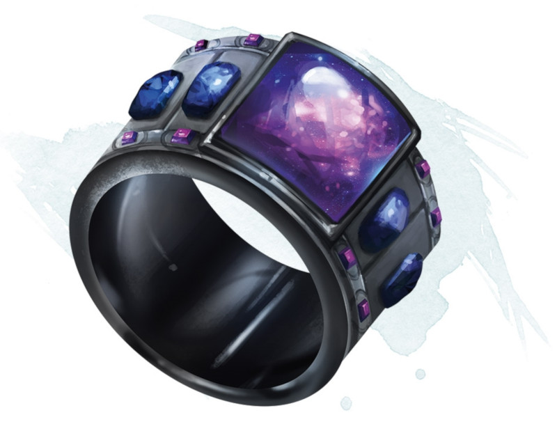

Ring of Shooting Stars
Ring, very rare (requires attunement outdoors at night)
While wearing this ring in dim light or darkness, you can cast dancing lights and light from the ring at will. Casting either spell from the ring requires an action.
The ring has 6 charges for the following other properties. The ring regains 1d6 expended charges daily at dawn.
Faerie Fire. You can expend 1 charge as an action to cast faerie fire from the ring.
Ball Lightning. You can expend 2 charges as an action to create one to four 3-foot-diameler spheres of lightning. The more spheres you create, the less powerful each sphere is individually.
Each sphere appears in an unoccupied space you can see within 120 feet of you. The spheres last as long as you concentrate (as if concentrating on a spell), up to 1 minute. Each sphere sheds dim light in a 30-foot radius.
As a bonus action, you can move each sphere up to 30 feet, but no farther than 120 feet away from you. When a creature other than you comes within 5 feet of a sphere, the sphere discharges lightning at that creature and disappears. That creature must make a DC 15 Dexterity saving throw. On a failed save, the creature takes lightning damage based on the number of spheres you created.
Shooting Stars. You can expend 1 to 3 charges as an action. For every charge you expend, you launch a glowing mote of light from the ring at a point you can see within 60 feet of you. Each creature within a 15-foot cube originating from that point is showered in sparks and must make a DC 15 Dexterity saving throw, taking 5d4 fire damage on a failed save, or half as much damage on a successful one.
The ring has 6 charges for the following other properties. The ring regains 1d6 expended charges daily at dawn.
Faerie Fire. You can expend 1 charge as an action to cast faerie fire from the ring.
Ball Lightning. You can expend 2 charges as an action to create one to four 3-foot-diameler spheres of lightning. The more spheres you create, the less powerful each sphere is individually.
Each sphere appears in an unoccupied space you can see within 120 feet of you. The spheres last as long as you concentrate (as if concentrating on a spell), up to 1 minute. Each sphere sheds dim light in a 30-foot radius.
As a bonus action, you can move each sphere up to 30 feet, but no farther than 120 feet away from you. When a creature other than you comes within 5 feet of a sphere, the sphere discharges lightning at that creature and disappears. That creature must make a DC 15 Dexterity saving throw. On a failed save, the creature takes lightning damage based on the number of spheres you created.
| Spheres | Lightning Damage |
|---|---|
| 4 | 2d4 |
| 3 | 2d6 |
| 2 | 5d4 |
| 1 | 4d12 |
Shooting Stars. You can expend 1 to 3 charges as an action. For every charge you expend, you launch a glowing mote of light from the ring at a point you can see within 60 feet of you. Each creature within a 15-foot cube originating from that point is showered in sparks and must make a DC 15 Dexterity saving throw, taking 5d4 fire damage on a failed save, or half as much damage on a successful one.
Dungeon Master´s Guide (SRD)
